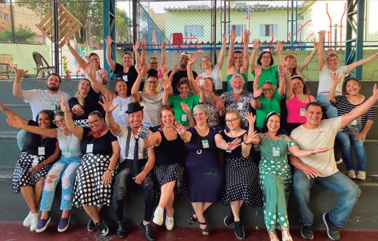

SEJA UM SEMEADOR VOLUNTÁRIO!
O serviço voluntário é um importantíssimo instrumento para a construção de uma cultura de paz.
Doar seu tempo, seu sorriso, seu amor, seu carinho, sua disposição, seu trabalho e seus recursos para alegrar o outro, para fazer feliz, para ser útil, não tem preço.
Você pode ser um Semeador Voluntário ou um Semeador Doador. Veja como clicando no botão abaixo:

NOSSA HISTÓRIA
Era uma vez, uma senhora que tinha quatro filhos. Dois desses filhos tinham deficiência intelectual. Desde pequenos ela sempre encontrava dificuldade em mantê-los nas escolas regulares e, conforme cresciam, a situação ficava ainda mais dificultosa. Essa mãe era membro da Igreja Metodista em São Caetano. Mulher de fé, trabalhadora, mãe dedicada e querida por todos. Suas irmãs e irmãos de fé decidiram apoia-la e envidar todos os esforços para contribuir para melhor qualidade de vida e bem estar dos seus filhos e de todas as pessoas com deficiência que pudessem alcançar. A AMAS - Associação Metodista de Ação Social, instituição beneficente, sem fins lucrativos, fundada em 1974 pela Igreja Metodista em São Caetano do Sul decidiu abraçar e ser a mantenedora desse projeto. Assim nasceu “O Semeador”.
SOBRE A ESCOLA

arrow_back
arrow_forward
A escola em São Caetano do Sul ocupa uma área de 2.066m2, proporcionando um ambiente amplo e diversificado para o desenvolvimento educacional.
Especializada no atendimento a pessoas com deficiência intelectual, múltiplas deficiências e transtorno do espectro autista, a instituição abrange o Ensino Fundamental
do 1º ao 5º ano na modalidade AEE, atendendo alunos com idades entre 6 e 30 anos. Adicionalmente, oferece um Projeto de Convivência e Fortalecimento de Vínculos para o
mesmo público, a partir dos 30 anos.
A abordagem educacional é fundamentada em princípios humanistas e relacionais, alinhando-se às normas educacionais, incluindo a Lei de Diretrizes e Bases da Educação Nacional
e a Lei 12.764 de 27/12/2012. O currículo e a metodologia adotados têm como objetivo proporcionar aos alunos não apenas o conhecimento teórico, mas também a capacidade de
aplicar esse conhecimento na prática. A ênfase no aprendizado ativo e reflexivo visa aprimorar as habilidades dos alunos, estimulando a reelaboração de conhecimentos
ampliação da compreensão sobre o mundo e sua própria realidade. Essa abordagem visa não apenas o desenvolvimento intelectual, mas também os aspectos afetivos, emocionais e
espirituais dos educandos
VENHA NOS VISITAR!
R. dos Meninos, 555 - Nova Gerti, São Caetano do Sul - SP, 09580-30VEJA COMO CONTRIBUIR!
1º
Se cadastrando no site da Nota Fiscal Paulista www.porta.fazenda.sp.gov.br
Na aba superior clique em:
- ENTIDADES
- DOAÇÃO DE CUPONS COM CPF (AUTOMÁTICA)
- PESQUISAR
- Digite o CNPJ da AMAS 48.569.263/0001-42
- PESQUISAR
- CONCLUIR
2º
Doando cupons fiscais sem CPF Para ter validade é preciso ser cupom fiscal, ou seja, com código de barras e QRcode.
3º
Doando seu tempo na organização desses cupons. Esse trabalho pode ser feito na escola ou na sua própria residência.
4º
Doando material escolar, lenços umedecidos, luvas descartáveis, alimentos que sirvam como “mistura” nas refeições.
5º
Doando valor monetário na conta da AMAS 50 anos ESCOLA METODISTA DE EDUCAÇÃO ESPECIAL
Associação Metodista de Ação Social
CNPJ 48.569.263-42
Banco do Brasil
Agência 2898-3
Conta Corrente 260-7
6º
Seja um doador
Seja um voluntário
Doe qualquer quantia para nós no PIX

EDUCAÇÃO
ENSINO FUNDAMENTAL
O atendimento aos anos iniciais do Ensino Fundamental destina-se a indivíduos de 6 a 30 anos com deficiência intelectual, múltiplas deficiências e/ou transtorno do espectro autista. Os objetivos dessa modalidade seguem as diretrizes da Lei Federal nº 9394/96 para o Ensino Fundamental no Brasil, buscando formar os alunos para seu pleno desenvolvimento e integração na vida escolar e social. O projeto pedagógico prioriza o aluno como centro do processo educativo, enfatizando a reflexão, criatividade, análise crítica, leitura, debates e atividades extracurriculares baseadas no contexto do aluno. A promoção do conhecimento e crescimento integral incentiva a autonomia, responsabilidade, diálogo, trabalho em equipe e solidariedade.
PROJETO SEMEAR
O projeto SEMEAR tem como meta proporcionar atendimento de alta qualidade a pessoas com múltiplas deficiências ou Transtorno do Espectro Autista (TEA) acima de 30 anos. O foco é oferecer recursos que promovam a convivência, fortalecimento de vínculos, cuidados pessoais, aquisição e manutenção de habilidades funcionais para a vida. Além disso, busca atender às necessidades de apoio contínuo, estimulando os participantes de acordo com seus interesses e potencialidades, garantindo a aquisição de independência em habilidades básicas de maneira funcional. O projeto se baseia nos princípios da Constituição Federal de 1988 e na Lei Orgânica da Assistência Social, enfocando a Proteção Social Básica ao destinar serviços e proteções sociais para adultos com deficiência intelectual.
GOSTOU DO NOSSO PROJETO?
VENHA SE MATRICULAR!
A escola é uma organização da sociedade civil e atende a população por meio de contrato particular de prestação de serviço, podendo conceder descontos financeiros mediante levantamento socioassistencial. Possui ainda Termos de Colaboração com a Prefeitura Municipal de são Caetano do Sul e com a Secretaria de Educação do Estado de São Paulo. As matrículas são realizadas presencialmente mediante documentação apresentada. Poderão ser agendadas visitas à instituição para conhecimento do espaço, equipe, proposta e atividades.